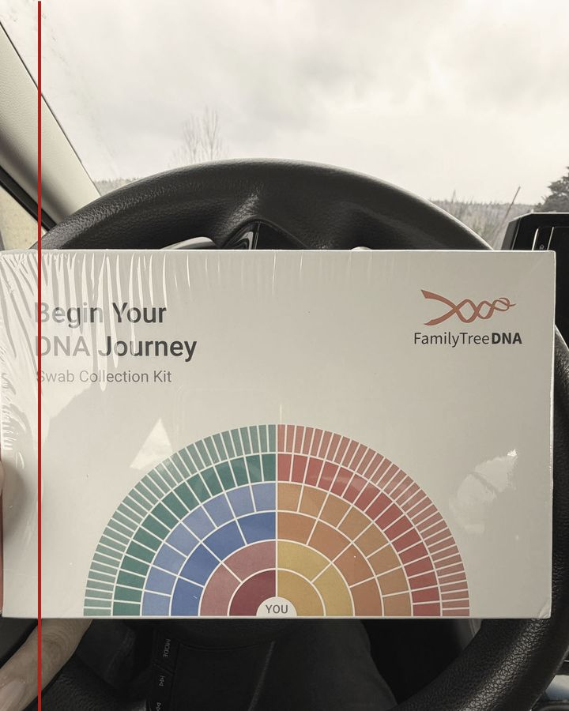
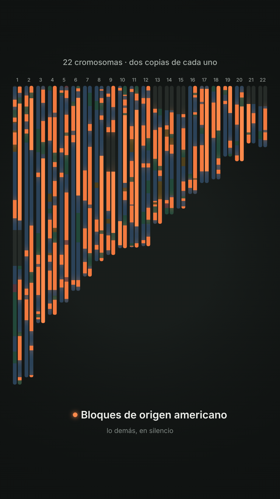
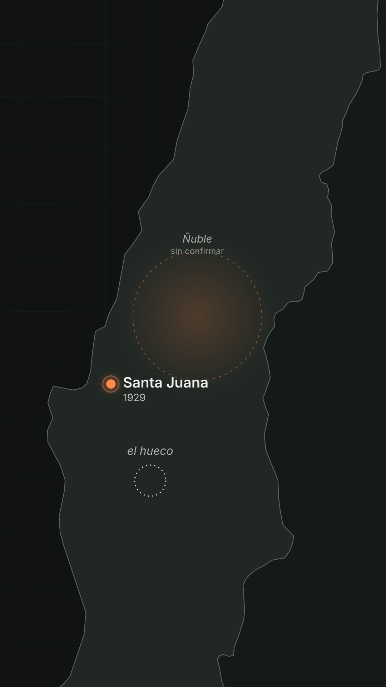
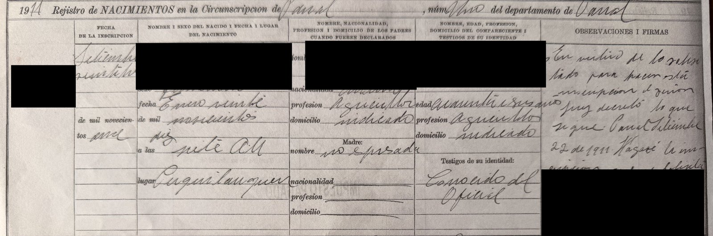
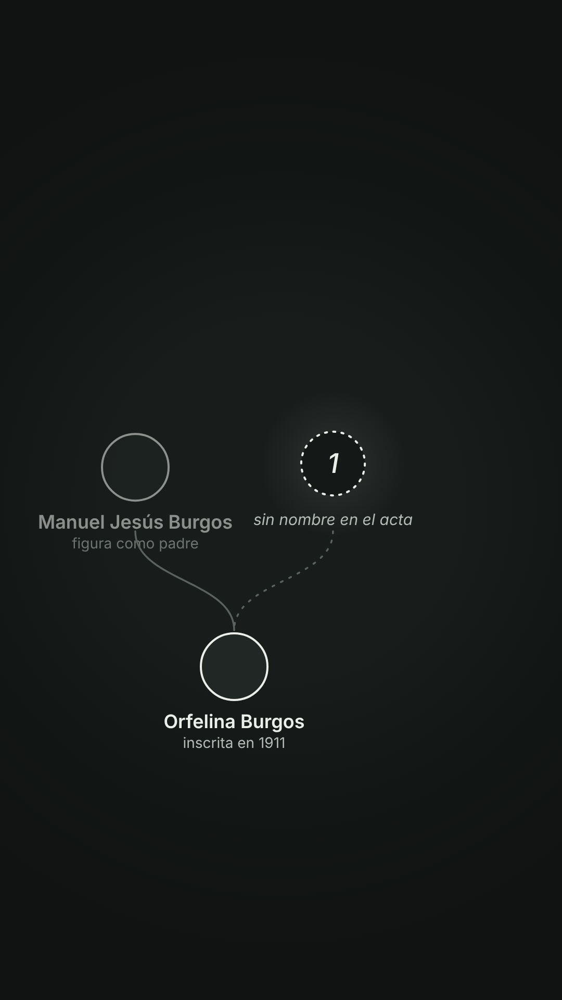
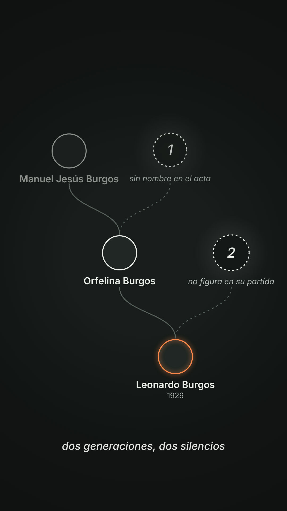
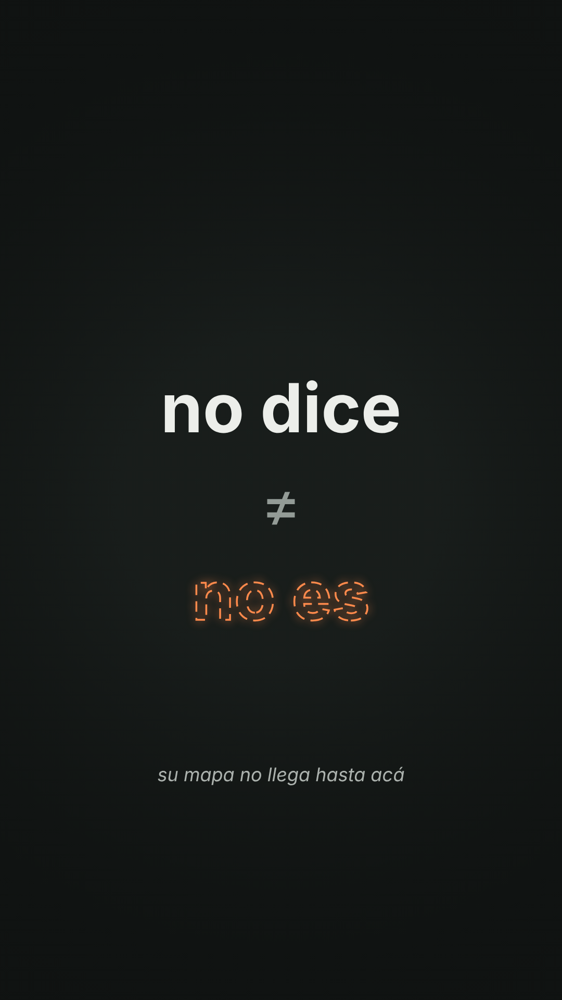

Un capítulo de AMUTUY
Cápsula de Espera
Mandé mi cuerpo al norte para que un laboratorio me diga de dónde vengo. La espera fue la obra.
El viaje
El 14 de agosto llegó del norte una caja sellada. Adentro había un hisopo y una promesa: decirme de dónde vengo. Cuatro días después la devolví con mi cuerpo adentro.
Durante más de un siglo, cuerpos de esta tierra fueron llevados a museos del norte sin que nadie les preguntara nada. Esta vez el cuerpo viaja solo, con consentimiento firmado y sello de correo.

Registro
Transcripto de los sistemas de seguimiento del correo argentino, del servicio postal de Estados Unidos y del laboratorio. Horas locales de cada lugar.
- El Bolsón
Llega el kit vacío, sellado - El Bolsón
Ingreso al correo - El Bolsón
En proceso de clasificación - Bariloche
Llegada al centro de procesamiento - Bariloche
En proceso de clasificación - Buenos Aires
Llegada al centro de procesamiento - Buenos Aires
Salida del país - Tres días sin registro.
- Miami
Procesada por el correo de Estados Unidos - West Palm Beach
Llegada a centro de distribución - Houston
Llegada al centro de procesamiento - Houston
Llegada a la oficina de correo - Houston
Salida para entrega - Houston
Alerta: entrega demorada - Houston
El laboratorio recibe la muestra - Houston
Comienza el análisis de datos
El contrato
Para mandar la muestra acepté los términos del servicio y la declaración de privacidad de la empresa. Casi nadie los lee enteros. Estas son las líneas que más pesan para esta obra, dichas con mis palabras.
- Reconocen que mis datos genéticos son míos. En la misma sección les doy permiso para analizarlos con métodos que todavía no existen.Condiciones del servicio, 20 de mayo de 2025
- No recibo ninguna compensación por investigaciones o productos que se desarrollen a partir de mi ADN.Condiciones del servicio, 20 de mayo de 2025
- Si lo pido, destruyen la muestra en un plazo de 60 días. Ni los términos ni la declaración de privacidad dicen que la devuelvan.Condiciones del servicio, 20 de mayo de 2025, y Declaración de privacidad, 24 de junio de 2025
- Mi muestra se guarda, con mi consentimiento, en un laboratorio de Houston, sin nombre ni datos que permitan identificarla.Declaración de privacidad, 24 de junio de 2025
- Cualquier disputa se rige por las leyes de Texas y los juicios se inician en tribunales de Houston. La empresa se reserva el derecho de demandarme en mi país. El arbitraje obligatorio y el plazo de un año para reclamar están escritos para clientes de Estados Unidos.Condiciones del servicio, 20 de mayo de 2025
- Mis datos, agregados y anonimizados, pueden usarse en investigación científica, histórica y antropológica, y publicarse. Otros usos, como compartirlos con investigadores externos, requieren mi consentimiento explícito.Declaración de privacidad, 24 de junio de 2025
- La empresa advierte que la información genética compartida con otras personas podría usarse en mi contra.Condiciones del servicio, 20 de mayo de 2025
El interruptor
En la configuración de mi cuenta hay una opción que permite que mi perfil aparezca en búsquedas de fuerzas de seguridad. Según la guía de la empresa, sirve para identificar restos de personas fallecidas o a autores de delitos violentos: homicidios, delitos sexuales, robos a mano armada, agresiones con agravantes. Los términos dicen que hay que optar por participar.
Cuando entré a mi cuenta el 22 de septiembre de 2026, la opción estaba activada. Decidí, por ahora, dejarla así.
Lo digo acá porque esa decisión no me alcanza solo a mí. El sistema busca por parentesco: a través de mi perfil se puede llegar a parientes que nunca firmaron nada.
Fuentes: Guía para las fuerzas del orden de FamilyTreeDNA, abril de 2024; Condiciones del servicio, 20 de mayo de 2025; Declaración de privacidad, 24 de junio de 2025.
Cinco generaciones
El test que hice busca parientes dentro de la base de datos de la empresa. Según la propia empresa, si dos personas que se hicieron el test no coinciden, es improbable que su parentesco esté dentro de las últimas cinco generaciones. Ese es el horizonte de memoria del laboratorio.
La memoria de mi familia llega hasta otro lugar, y se cuenta de otra manera. Lo que sigue pone lo que se cuenta frente a lo que se mide.
Fuente: Family Finder, preguntas frecuentes (FamilyTreeDNA), en inglés.
El resultado
El informe ya llegó. No reemplaza a las partes anteriores: se pone frente a ellas. Son cuatro estaciones.
Estación 1 de 4
El cariotipo
Pagué un test de ADN para hacerle una pregunta a mi cuerpo. La respuesta vino en colores: veintidós cromosomas, dos copias de cada uno, y en varios, bloques de origen americano. Mi cromosoma Y es europeo, de la rama I-PF6950. No es un veredicto. Es un mapa con zonas en blanco.

Transcripción del video
Veintidós cromosomas, con dos copias de cada uno, se llenan de color. Los bloques de origen americano se encienden en naranja.
Estación 2 de 4
El mapa
Mi papá, Leonardo, nació en Santa Juana, Chile, en 1929. El laboratorio dibuja el resto con pocas referencias del sur de Sudamérica, y por eso muchas zonas quedan sin nombre. Ñuble aparece tenue: son pistas sin confirmar.

Transcripción del video
Un mapa de Chile que se acerca a Santa Juana, con un punto naranja. Ñuble aparece con un halo tenue, sin confirmar. Un anillo vacío respira junto al punto: el hueco.
Estación 3 de 4
El acta
En septiembre de 1911 se inscribió a Orfelina Burgos. El acta nombra a su padre, Manuel Jesús. No nombra a su madre. Dos generaciones después, en la partida de nacimiento de mi papá, falta también el nombre del suyo. Dos silencios, una familia.



Transcripción del video
Orfelina Burgos, inscrita en 1911. Manuel Jesús Burgos figura como padre. Del otro lado, un círculo vacío, marcado con un 1: sin nombre en el acta.
Transcripción del video
Leonardo Burgos, 1929, hijo de Orfelina. Su otra rama termina en un segundo círculo vacío, marcado con un 2: no figura en su partida. Dos generaciones, dos silencios.
Estación 4 de 4
La pregunta abierta
No sé si tengo ascendencia mapuche. Los datos no lo dicen ni lo niegan: el laboratorio no usa esa palabra, y eso no quiere decir que no esté. Pasé años consiguiendo un papel que dice 'chileno' para honrar a quienes ya no están, y esta obra es otra manera de hacer ese trámite: pedirle a lo que queda que me diga de dónde vengo.

Transcripción del video
Una lista con las categorías del laboratorio. Un buscador escribe la palabra mapuche y no la encuentra entre ellas. Después, el texto: no dice, distinto de, no es.
Este trabajo es una pregunta, no una conclusión. Los datos genéticos tienen límites que el propio laboratorio reconoce.